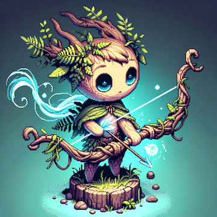
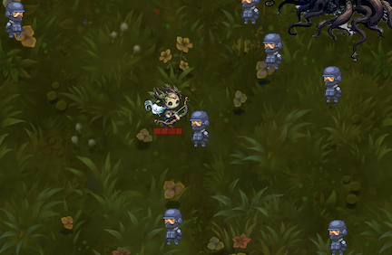

TERRAN: And the Wrath of the Wildwoods
TERRAN: And the Wrath of the Wildwoods
TERRAN: And the Wrath of the Wildwoods is a 2D top-down, rogue-like, wave-based game developed using the Godot Engine. The game focuses on fast-paced action, strategic environmental interactions, and immersive gameplay centered around defending the forest from waves of invaders. This project emphasizes dynamic mechanics, resource management, and engaging visual and audio design.
Project Details
Gameplay Mechanics
- Wave-Based Combat:
- Players face escalating waves of enemies with increasing difficulty.
- Boss enemies appear every 5–10 waves, requiring advanced strategies and ability use.
- Abilities and Combat System:
- Four key-bound abilities (
Q, W, E, R) include:
- Ranged Attacks
- Area-of-Effect Abilities
- Defensive Maneuvers
- Ultimate Skills
- Resource management is crucial for executing abilities and sustaining combat.
- Abilities can be upgraded and customized through skill trees.
- Movement:
- Point-and-Click Navigation for precise positioning and evasion.
- Smooth, responsive movement enhances player control.
Main Character

- Terran is the forest spirit and the protagonist of the game.
- Designed with tree-like features and a magical bow, Terran embodies the forest’s resilience and power.
Map Design and Environment

- Central Grove: A critical area that must be defended. Large trees with strategic importance are located here.
- Outer Ring and Pathways: Trees encircle the grove, offering layers of defense and choke points.
- Dynamic Battlefield:
- Environmental elements react to player actions.
- Interactive features such as releasing spores, triggering barriers, or utilizing terrain for strategic advantage.
- Randomized Placement: Tree and enemy placement change between sessions for replayability.
Technical Details
- Physics and Movement:
CharacterBody2D: Used for precise movement and collision handling.velocity and move_and_slide(): Manage character navigation and real-time movement mechanics.
- Abilities and Preloaded Scenes:
- Abilities are managed via preloaded
.tscn scenes:
- Verdant Arrow
- Whisp’s Wrath
- Devouring Wolves
- Slash
- Indignation
- Spectral Dash
- Timers (
Timer Nodes):
- Handle ability cooldowns and attack delays.
- Examples:
iceSpearTimer, slashTimer, dashTimer.
- Animations:
AnimationPlayer: Controls character animations (e.g., “RUN” for movement).- Conditional animations such as sprite flipping and attack animations enhance visual clarity.
- Dynamic Interactions:
- Signal System:
- Signals manage events like player death, ability usage, and level progression.
- Environmental interactions include shaking trees, activating barriers, and spawning resources.
- Resource Management:
- Collected resources and upgrades are dynamically tracked using arrays (e.g.,
collected_upgrades).
- GUI components like
HealthBar and ExperienceBar visually display player stats.
- AI and Detection:
- Enemies use proximity detection (
_on_enemy_detection_area_body_entered) for dynamic targeting and engagement.
- Randomized spawn points increase replayability and challenge.
- Player Experience:
- Sound effects (
AudioStreamPlayer) enhance immersion for events like leveling up and defeating enemies.
Tween nodes create smooth transitions for GUI elements and animations.
Progression and Leveling
- Experience System:
- Players gain experience through combat and completing waves.
- Experience is tracked visually using
ExperienceBar and level-up notifications.
- Leveling unlocks new abilities and upgrades.
- Upgrade System:
- Players collect upgrades to enhance abilities and defenses.
- Examples of upgrades:
- Spell Cooldown Reduction
- Increased Spell Size
- Additional Ammo
- Randomized upgrade selection ensures varied gameplay each session.
- Godot Engine: Core game engine for development.
- GDScript: Used for scripting gameplay mechanics, animations, and interactions.
- Graphics and Audio:
- Custom sprites and animations designed using external tools.
- Immersive audio effects enhance the gameplay experience.
- Version Control:
- Managed through Git and GitHub for collaborative development and versioning.